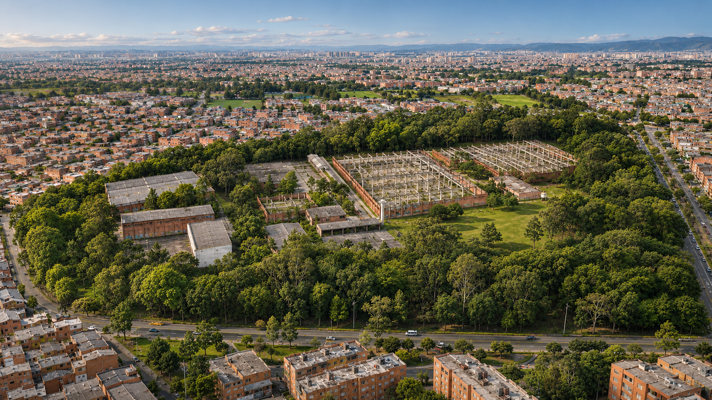

Ir a controles
B1
BAVARIA
Preparando el territorio…BOGOTÁ · KENNEDY · BAVARIA
Un lugar.
Mil formas de vivirlo.
Patrimonio que se transforma.
Naturaleza que nos conecta.
↔ ARRASTRA PARA EXPLORAR EL TERRITORIO
Cargando recursos del simulador…

UN NUEVO CAPÍTULO PARA UN LUGAR ÚNICO
Aquí
vive Bavaria
Visualización conceptual de Bavaria